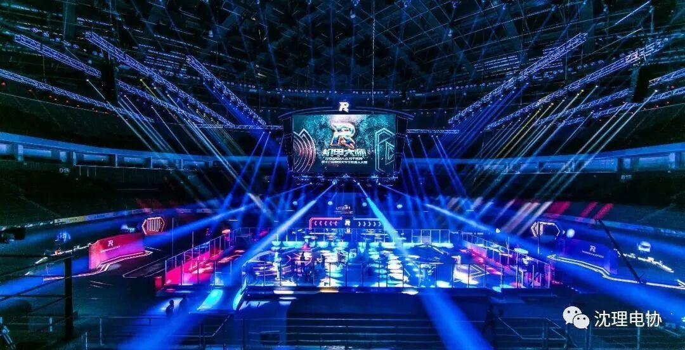
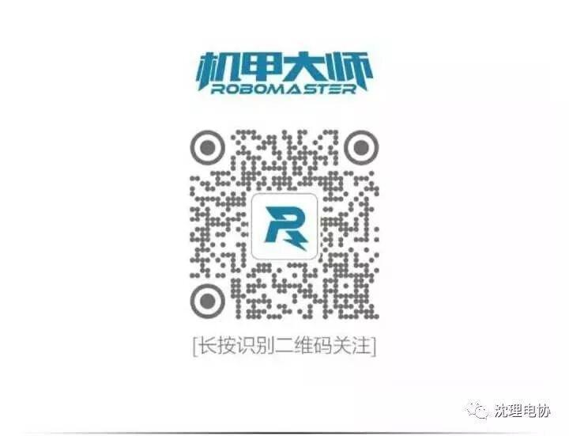

RoboMaster2018最全招聘(正式+实习) | 我们想和你一起搞大事情！
RoboMaster2018最全招聘(正式+实习) | 我们想和你一起搞大事情！
2018-03-01小RRoboMaster
前几天，小R 发出了两次招聘信息，向研发方向的小伙伴伸出了橄榄枝。但因为岗位不多，有人表示自己的技能无处施展，很气很遗憾！
其他技术方向的，甚至不做研发的小伙伴就不能来 RoboMaster 和我们一起玩耍了吗？当然不是啦～小R 我就是一个活蹦乱跳的例子！
所以，一大波新鲜的岗位又来了！不仅有各种方向的研发岗位，还有非研发类的运营和市场岗位，并且正式员工和实习生都需要，快把简历砸过来吧！
RoboMaster 简介
RoboMaster 是一个由 DJI大疆创新发起并承办的机器人竞技平台，每年吸引全球 200 多所高校，近万名青年工程师参与竞技，培养出一代又一代的青年工程师。
加入我们，你将参与顶尖机器人赛事的筹备和举办，和最酷的机器人平台一起，在全球掀起一场科技狂潮！

RoboMaster2017 比赛现场
招聘岗位（正式员工）
▊ 嵌入式测试工程师
岗位职责
1. 负责测试工具开发和自动化测试开发；
2. 独立完成整个产品测试流程操作，包括制定计划，测试用例设计，测试执行，提交测试报告；
3. 负责提升产品用户体验，保证产品正常上线。
任职要求
1. 本科或以上学历，计算机相关专业，2 年以上嵌入式软件开发测试经验；
2. 掌握产品测试理论、测试方法、测试流程与规范等
3. 精通 C 语言，熟悉 C++/C# 语言，熟悉数据结构，具有良好的代码编写习惯；
4. 熟悉 ARM 处理器架构，熟练掌握嵌入式交叉编译环境和软件调试工具；
5. 熟悉 Linux、Ucos 或者其它任一款主流嵌入式操作系统的移植、裁剪、驱动开发和应用开发；
6. 具备基本的图像类算法基础，有编译器和 OS 设计相关经验者优先；
7. 吃苦耐劳，细心，学习能力强；积极主动、责任心强、沟通协调能力；具有较强的逻辑思维能力、总结能力。
▊ 硬件测试工程师
岗位职责
1. 负责制定硬件测试流程，并执行硬件测试及硬件可靠性测试；
2. 负责硬件方案制定、原理图设计及 PCB 协作；
3. 负责单板转产与维护。
任职要求
1. 电子、机械电子、自动化相关专业，本科或以上学历，有电子竞赛获奖经历优先；
2. 两年以上硬件开发经验，熟练使用 cadence 或 altium 绘制原理图，能独立完成硬件原理图设计到PCB打样制作流程；
3. 有丰富的嵌入式硬件设计经验，良好的模拟电路和数字电路基础；
4. 能熟练运用示波器、逻辑分析仪等仪器进行信号测试和分析，有产品及硬件测试经验的优先考虑；
5. 具备较强的团队协作能力、沟通能力、责任意识及上进心，具备良好的学习能力，能够承受一定压力。
▊ 硬件工程师
岗位职责
1. 项目的需求收集，方案设计，单板开发，硬件研发等相关工作；
2. 降成本，质量提升相关工作。
任职要求
1. 熟悉电路设计、模拟电路基础扎实、有RF硬件设计项目经验，学习能力强，愿意在此方向深入学习；
2. 模拟、数字电路扎实。有丰富的设计经验，逻辑清晰，参与电路设计类比赛、RoboMaster 比赛、其他机器人比赛经验优先。
▊ 技术文档专员
岗位职责
1. 理解研发工程师的工作，整理产品技术特性和技术文档；
2. 对技术资料进行翻译、校对；
3. 撰写对外产品说明书和原理介绍；
4. 其他部门对外技术类文字信息的书写和校对；
5. 作为产品资料项目的负责人，收集市场端需求，不断丰富市场支撑材料。
任职要求
1. 工科专业大学本科或以上学历；
2. 至少 2 年工作经验者优先；
3. 参加过机器人比赛者优先；
4. 优秀的中文和英语书写能力；
5. 工作中注重系统思维、逻辑表达和流程化思维；
6. 沟通和表达能力强；
7. 较好的平面设计意识。
▊ 教育课程工程师
岗位职责
1. 负责撰写 RoboMaster 机器人培训的教材；
2. 负责机器人相关课程的整体课时设计、课程内容编排、课程讲授及培训；
3. 负责课程的示例代码开发和维护、硬件方案的设计；
任职要求
1. 本科或以上学历，有项目统筹经验；
2. 计算机，电子、机械、自动化等相关理工科专业，了解各个方向的技术发展趋势；
3. 有一定的机器人比赛经验，参加过 RoboMaster 或其他国家级、国际级机器人赛事；
4. 对机器人/STEAM 教育市场有一定了解、有热情，具有相关教育公司任职经验优先；
5. 有机器人/STEAM/创客/科技等课程撰写，课程设计，课程讲授等经验优先；
6. 逻辑清晰，文字功底好，能够将机器人学习思路，以图文和视频形式记录与传承，并以清晰的文字或语言表述出来；
7. 具备钻研精神，有良好的学习能力、强烈的进取心、创新意识和高效执行的能力；
8. 具备较强的团队精神、良好的表达和沟通能力，工作认真负责。
▊ 市场销售专员（教育）
岗位职责
1. 负责国内外教育市场渠道的拓展和维护；
2. 负责与B端合作伙伴的商务谈判、项目管理、问题解决等B端运营工作；
3. 负责用户、行业市场的跟踪搜集，分析反馈行业市场趋势信息；
4. 负责国内外教育市场合作伙伴的合作配合以及维护。
任职要求
1. 本科或以上学历，市场营销、工商管理、理工科类专业优先；
2. 熟悉国内机器人/STEAM 教育市场，具有相关教育公司 1-3 年市场销售任职经验优先；
3. 拥有相关教育渠道/政府机构资源者优先；
4. 具有较强的市场活动组织能力、谈判能力、渠道管理能力和重要客户管理能力，能敏锐地把握市场动态；
5. 性格开朗，具有高度的工作热情，出色的人际沟通能力，勇于开拓创新，能承受较大的压力和挑战。
招聘岗位（实习生）
工作时间：实习时间为 2018 年 3 月-8 月，要求工作日全职在岗。
转正机会：表现优异的实习生有转正机会。
▊ 赛务专员
岗位职责
1. 参赛队统筹及管理；
2. 规则文本迭代、各项赛事基础运营；
3. 赛事执行策划、人才库管理等。
任职要求
1. 大学本科或以上学历；
2. 对机器人赛事有强烈的热情；
3. 需要具备一定的策划能力、统筹能力、良好的沟通能力，统筹包括公司、政府、企业、高校多方面资源方可有效开展各类赛事的基础运营工作；
4. 具备 RoboMaster 参赛或志愿者工作经验者优先。
▊ 品牌专员
岗位职责
1. 青工会、真人秀、动漫等赛事文化类活动的策划执行；
2. 文化品牌的内容挖掘，原创内容的制作；
3. 赛事文化周边开发，外界文化品牌合作。
任职要求
1. 对各类国际型赛事或商业活动的品牌营销具有一定理解，有较强的业务拓展能力，具备文化传播及品牌营销的职业敏感度，对文化类产品开发具备强烈的热情；
2. 具备 RoboMaster 参赛或志愿者工作经验者优先。
▊ 策划专员
岗位职责
1. 负责 RoboMaster 全年各类赛事的现场呈现统筹；
2. 第三方技术单位的前提沟通和现场执行统筹，串联多方资源负责赛事呈现的最终效果，保证为直播端的内容输出质量。
任职要求
1. 具备一定的大型演出、赛事、商业活动的策划统筹及导演经验；
2. 熟悉各类常规舞美设备的型号及参数标准效果，对转播画面质量具有一定的判断能力，拥有风险快速处置能力；
3. 具备较强的沟通协调能力。
▊ 市场专员（活动推广）
岗位职责
你将协助或独立运营官方活动策划和宣推，包括但不限于直播、线下 Event 等。
1. 对所负责的线上线下 Event 进行项目排期和内容策划；
2. 将策划内容进行落地，并选择合适的渠道进行推广。
任职要求
1. 本科以上学历，有主人翁意识，英语好优先；
2. 一级棒的文字功底和逻辑思维，脑洞爆炸，敢于打破常规；
3. 具备产品思维，能从用户角度思考问题，抓住用户 G 点；
4. 对解决问题有非常规的思路，热爱生活，细节控；
5. 有大型活动策划运营经历，能具备全局观和团队意识。
▊ 市场专员（社交媒体）
岗位职责
你将协助或独立运营官方新媒体矩阵，包括但不限于微信微博、知乎、脸书等。
1. 根据项目进程和用户心理，选择适合角度策划制作内容；
2. 洞察现有项目特点，选择合适渠道进行推广营销。
任职要求
1. 本科以上学历，有主人翁意识，英语好优先；
2. 一级棒的文字功底和逻辑思维，脑洞爆炸，敢于打破常规；
3. 具备产品思维，能从用户角度思考问题，抓住用户 G 点；
4. 对科技和公众热点敏锐度高，懂得选择热点和切入角度；
5. 有新媒体运营实操经历，有一定的个人风格。
▊ 开发助理
岗位职责
1. 比赛系统、OB 呈现系统、直播系统、报名系统等维持赛事正常开展的各类系统研发；
2. 根据赛事技术需求升级优化各系统，并保证其运行的可靠性；
3. 协调组织包括公司互联网 IT 部门、第三方分包商的资源，在规定节点内完成相关系统的开发和测试工作。
任职要求
1. 具备严密的工作逻辑性，擅长项目管理及统筹；
2. 具备一定的 IT 知识，具有产品经理思维，时刻将用户体验作为工作重心；
3. 具有一定的沟通能力，复杂问题的解决能力、分析能力，可完成多方资源的整合，保障项目按照既定节点完成。
福利待遇
我们提供有竞争力的薪资待遇及完善丰富的福利体系，让每一位员工为理想奋斗的同时没有后顾之忧。
实习生享有如下福利：
▊ 商业保险
公司会为每一位员工购买商业保险。
▊ 季度团建
每个部门都有丰厚的季度团建活动经费，促进部门整体气氛积极向上、和谐自由。
▊ 接驳班车
公司安排不同办公地点间的固定班车接送，以便员工工作出行。
▊ 暖心宿舍
员工可选择公司安排的舒适便利的宿舍，无需担心住房问题。
▊ 话费补贴
公司为每位员工提供工作手机及号码，所有费用由公司承担。
▊ 零食、水果、早餐
公司提供多种多样超值零食、饮料、新鲜水果。
▊ 入职贺礼与节庆礼品
公司为每位员工准备了入职大礼包，并且每年生日及各大节日均有神秘礼物。
▊ 健身房及沐浴房
公司提供健身房及沐浴房给每位员工使用。
若你是正式员工，还将享有如下福利：
▊ 带薪休假
除法定节假日外，公司还为每位员工提供了带薪年假、带薪病假，工作表现优秀的员工还可获得额外奖励假期。
▊ 住房补贴
入职满一年并不住公司宿舍的员工，每月可享有住房补贴。
▊ 幼儿园托管
公司提供 1 岁半-6 岁儿童的蒙特梭利双语教育活动；提供儿童看管服务及游乐空间，采用全日制，半日制婴幼儿活动作息。
▊ 健康体检
公司每年一次员工年度体检，可选医院和医疗机构种类多样。
工作地点：深圳市南山区西丽
简历投递通道: jiaming.fu@dji.com
了解更多岗位:
1、大疆研发工程师招聘 | 加入最热血的机器人平台，干一份有情怀的事业
2、RoboMaster工程师培训营招募 | 一大波研发工程师培训正在袭来！
这里有热血的工作和激情，加入我们，2018 年我们一起来搞大事情吧！

- 专业不枯燥，解读机器人信息 -
本文转载自[Robomaster]，搜索[RobomasterNews]即可关注